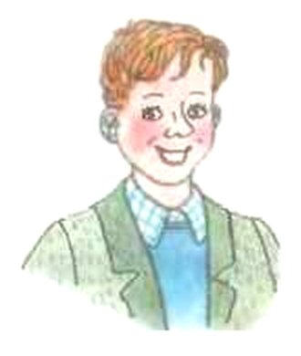
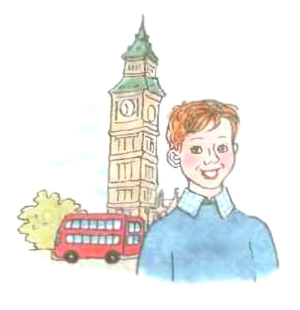
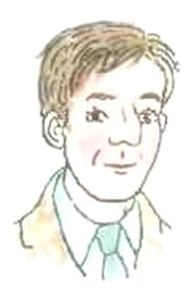
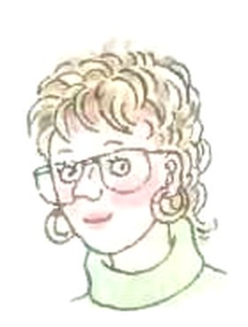
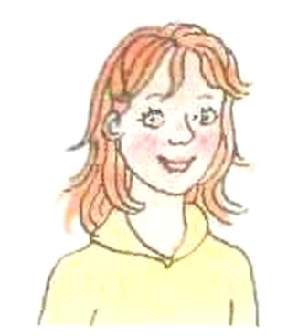
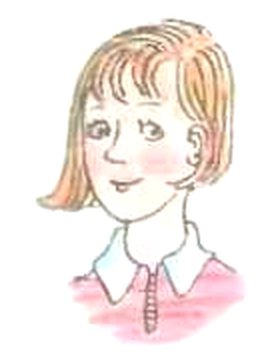
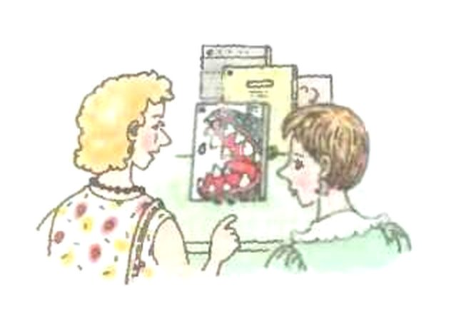
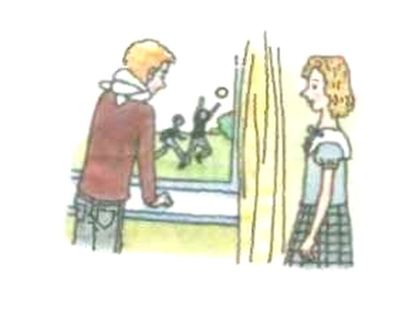
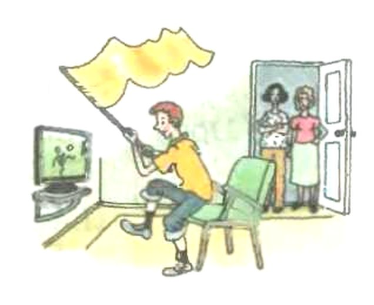

Unit 1 · Step 1
Джон Баркер и его семья
Арслан, это первый урок нового раздела. Английский мальчик Джон рассказывает о себе и о своей семье.
На этом телефоне нет английского голоса, поэтому кнопок-динамиков не видно. Английские слова послушай на уроке или в аудиоприложении к учебнику.
Представь: к вам в класс пришёл новенький из другого города. Он встаёт у доски и говорит: «Я Тимур. Мне десять лет. У меня есть сестра и кот».
После урока друг спрашивает тебя: «Ну, что там новенький?» И ты рассказываешь уже не «я», а «он»: «Его зовут Тимур. Ему десять. У него есть сестра и кот».
Вот и весь этот урок. Джон говорит о себе: I … (я). А мы потом рассказываем о нём: He … (он).
Что ты узнаешь:
- как пересказать про другого: I live → he lives;
- семь новых слов: cousin, daughter, film, television, watch, when, why;
- как спросить «Ты …?» — Do you …? — и коротко ответить.
Кнопка с динамиком читает английские слова вслух. Это голос телефона: он помогает услышать слово, но записи из учебника не заменяет.
В английском тексте нажми на строчку — появится перевод. Нажми ещё раз — перевод спрячется.
Надпись вверху шага подскажет, откуда он: синяя — из учебника, золотая — задание учебника, оранжевая — сверх учебника (правила подробнее, словарик, игры).
Подробнее, как в учебнике · с. 3–7
- Раздел называется Unit 1 «Meet John Barker and His Family» — «Познакомься с Джоном Баркером и его семьёй».
- Раздел разбит на уроки. Урок называется Step — «шаг». Это Step 1, с. 3–7. Внизу с. 7 начинается Step 2, он в эту тему не входит.
- DO IT TOGETHER — «делаем вместе»: упражнения 1–7, их делают в классе.
- DO IT ON YOUR OWN — «делай сам»: упражнение 8, его делают дома в рабочей тетради.
- Значок диска с числом в скобках — номер записи к заданию. В Step 1 их четыре: (1), (2), (3), (4). Записи включают на уроке, их же можно послушать в аудиоприложении к учебнику.
- Вверху с. 3 нарисована радуга и надпись Unit 1.
1Джон рассказывает о себе
Это Джон Баркер (John Barker). Он говорит о себе, поэтому почти каждая фраза начинается с I — «я». I'm — это коротко I am.

Что говорит Джон
Нажми на строчку — появится перевод.
I'm a pupil.
I go to school in London.
I'm John and I'm eleven.
I'm from London.
I go to school five days a week.
I don't go to school on Saturday and on Sunday.
I have a lot of friends at school.
I like my school, my friends and my teachers.
I have a mother, a father and a sister. Her name is Sally.
I have two pets — a dog, Chase, and a cat, Smokey.
Что нужно сделать
Сначала прочитай, что говорит Джон. Потом на уроке включат запись (1): диктор рассказывает о Джоне, но кое-где ошибается. Твоя задача — заметить ошибку и поправить.
Поправляют двумя короткими предложениями. В первом есть not — «не»: так неправильно. Во втором — как на самом деле. Учебник даёт образец такого ответа: John is not … . He is … .
Вот как это работает на другой девочке. Энн (Ann) говорит о себе: I'm nine. — «Мне девять». А диктор говорит: Ann is ten. Это ошибка. Поправляем:
- Ann is not ten. She is nine.Энн не десять лет. Ей девять.
Заметь: Энн говорит I'm (я), а мы о ней — she is (она). О мальчике скажем he is (он). Как меняются слова, когда говоришь о другом, — на следующем шаге.
А если ошибка в том, что он делает?
Тогда вместо is not говорят doesn't — «не». Пусть Энн сказала: I have a cat. — «У меня есть кошка». А диктор: Ann has a dog. Поправляем:
Ann doesn't have a dog. She has a cat.
У Энн нет собаки. У неё кошка.
Слово doesn't тоже разберём на следующем шаге.
Запись (1) с голосом диктора включают на уроке, её же можно послушать в аудиоприложении к учебнику. Наши кнопки-динамики читают только слова Джона: ошибок диктора в них нет.
Подробнее, как в учебнике · с. 3
- Упражнение 1: прочитай, что говорит о себе мальчик по имени Джон Баркер (John Barker). А теперь послушай, что говорит о нём диктор (запись 1). Скажи, в чём диктор ошибается.
- Образец: John is not eleven. He is twelve.
- В середине страницы нарисован Джон: рыжий мальчик в зелёном пиджаке и голубом свитере. Вокруг него 10 облачков с его словами, в два столбика. Выше они выписаны по рядам, слева направо.
- Все 10 фраз: I'm a pupil. I go to school in London. I'm John and I'm eleven. I'm from London. I go to school five days a week. I don't go to school on Saturday and on Sunday. I have a lot of friends at school. I like my school, my friends and my teachers. I have a mother, a father and a sister. Her name is Sally. I have two pets — a dog, Chase, and a cat, Smokey.
Я → он, она: что меняется
В русском ведь тоже так: я живу — он живёт. Конец слова меняется. Только в русском он меняется по-разному, а в английском почти всегда одинаково — хвостик -s.
Как меняются слова Джона
- I am → he is, she isя → он, она (коротко: I'm → he's, she's)
- I live → he livesя живу → он живёт
- I like → he likesя люблю → он любит
- I go → he goesя хожу → он ходит (после o пишут -es)
- I watch → he watchesя смотрю → он смотрит (после ch тоже -es)
- I have → he hasу меня есть → у него есть (особое слово, его надо запомнить)
- I don't go → he doesn't goя не хожу → он не ходит (хвостик переехал в doesn't)
А почему -s только для одного?
В русском конец слова меняется у всех: я живу, ты живёшь, он живёт, мы живём. В английском почти все говорят одинаково: I live, you live, we live, they live. Меняется только «он, она, оно»: he lives, she lives, it lives.
It — «оно»: так говорят о животном или о вещи. My cat likes fish. → It likes fish. — Моя кошка любит рыбу. → Она любит рыбу.
Когда пишут -es, а не -s? Если слово кончается на o, ch, sh, s, x: go — goes, watch — watches, wash — washes. Так легче выговорить.
Примеры и частые ошибки
- My cousin lives in Makhachkala.Мой двоюродный брат живёт в Махачкале.
- Tom likes football.Том любит футбол.
- She goes to school by bus.Она ездит в школу на автобусе.
- My dad watches TV in the evening.Папа смотрит телевизор вечером.
- Ann has a little sister.У Энн есть младшая сестрёнка.
- Nick doesn't like milk.Ник не любит молоко.
- We live in a big house.Мы живём в большом доме. Мы — нас много, хвостик -s не нужен.
Так говорить нельзя
- Забыли хвостик: об одном другом — всегда с -s.
- Лишнее is: оно нужно, когда действия нет (He is ten). Если есть действие (lives), is не ставят.
- have для одного другого превращается в has.
- После doesn't хвостик уже не нужен: он «переехал» в doesn't.
Проверь себя
Спроси Джона
Часть A. Представь, что ты разговариваешь с Джоном и задаёшь ему 9 вопросов. Что он ответит? Отвечать нужно за Джона, как ответил бы он сам.
Потом проверь себя по записи (2) — на уроке или в аудиоприложении.
Вопросы Джону
Нажми на строчку — появится перевод.
What's your name?
How old are you?
Do you live in Leeds?
Do you go to school?
Do you like your school?
Do you have a lot of friends?
Do you have a sister or a brother?
Do you have pets?
What are your pets?
- Все ответы — в словах Джона на с. 3. Открой шаг 2 и ищи там.
- На вопрос Do you …? отвечают коротко: Yes, I do. или No, I don't. Как это устроено — на шаге 6.
- На вопросы с What и How «да» или «нет» не скажешь. Начало ответа подсказывает сам вопрос: What's your name? — My name is …; How old are you? — I'm …
- Про Лидс Джон ничего не говорит. Найди в его словах, из какого он города, и подумай, что он ответит.
Часть B. Работа в парах. Вы с соседом по парте задаёте друг другу те же вопросы. Теперь ты отвечаешь уже про себя — правду. Заранее прочитай вопросы и подумай, что ответишь.
Подробнее, как в учебнике · с. 4
- Упражнение 2, часть A: представь себе, что ты разговариваешь с Джоном. Что он ответит тебе, если ты задашь ему следующие вопросы? Проверь себя (запись 2).
- Вопросы стоят столбиком: слева You: и вопрос, справа John:, номер от (1) до (9) и пустая строчка для ответа.
- You: What's your name? · You: How old are you? · You: Do you live in Leeds? · You: Do you go to school? · You: Do you like your school? · You: Do you have a lot of friends? · You: Do you have a sister or a brother? · You: Do you have pets? · You: What are your pets?
- Часть B: поработайте в парах. Задайте друг другу те же самые вопросы и ответьте на них.
Вопрос «Do you …?» и короткий ответ
В русском вопрос звучит почти как обычная фраза: «Ты любишь кошек.» — «Ты любишь кошек?» Слова те же, меняется только голос.
В английском одного голоса мало. Нужен знак в самом начале, как звонок перед уроком: прозвучало Do — значит, будет вопрос. Само do на русский не переводится.
Короткий ответ
В ответе повторяют того же помощника: спросили с do — отвечаем с do. don't — это коротко do not.
- Do you like milk? — No, I don't.Ты любишь молоко? — Нет.
- Do you have a brother? — Yes, I do.У тебя есть брат? — Да.
- Do you play football? — Yes, I do.Ты играешь в футбол? — Да.
- Do you watch films in the evening? — No, I don't.Ты смотришь фильмы вечером? — Нет.
- Do you live near the sea? — Yes, I do.Ты живёшь у моря? — Да. Так ответит любой мальчик из Каспийска.
А почему нельзя просто «You like cats?»
В английском порядок слов строгий: сначала кто, потом что делает. You like cats. — это просто «Ты любишь кошек», сообщение, а не вопрос.
Чтобы получился вопрос, впереди нужен знак — do. А в коротком ответе do заменяет всё действие целиком: Yes, I do — «Да, люблю».
А если действия нет?
В вопросах What's your name? и How old are you? никакого do нет. Почему? В них нет действия (живёшь, любишь, ходишь). Есть только am, is, are.
Такое слово само выходит вперёд, помощник ему не нужен. What's — это коротко What is.
- What's your name? — My name is Tom.Как тебя зовут? — Меня зовут Том.
- How old are you? — I'm nine.Сколько тебе лет? — Мне девять.
- Are you a pupil? — Yes, I am.Ты ученик? — Да.
- Are you from London? — No, I'm not.Ты из Лондона? — Нет.
Видишь? Спросили с are — отвечают с am: Yes, I am. А do здесь не нужен.
Где? Когда? Почему?
Если нужен вопрос «где?», «когда?», «почему?», вопросительное слово встаёт самым первым, а дальше всё как в вопросе Do you …?
- Where do you live?Где ты живёшь?
- When do you play football?Когда ты играешь в футбол?
Проверь себя
3Новые слова
В этом уроке семь новых слов. Учебник просит послушать и повторить их за диктором (запись 3), а потом прочитать самому. Дома повторить поможет кнопка-динамик.
В квадратных скобках — транскрипция: как слово звучит, записанное особыми значками. Чёрточка вверху [ˈ] стоит перед слогом, на который падает ударение.
- cousin[ˈkʌzn]двоюродный брат или сестраSally and Andy are my cousins.Салли и Энди — мои двоюродные брат и сестра.
- daughter[ˈdɔːtə]дочьThe family has two sons and three daughters.В семье два сына и три дочери.
- film[fɪlm]кинофильмa film about childrenфильм о детях
- television[ˈtelɪˌvɪʒn] (TV)телевизор, телевидение; коротко — TVWhat is on TV today?Что сегодня показывают по телевизору?
- watch[wɒtʃ]смотреть, наблюдатьI like to watch TV with my brother.Я люблю смотреть телевизор с братом.
- when[wen]когдаWhen is your birthday?Когда у тебя день рождения?
- why[waɪ]почемуWhy are you happy today?Почему ты сегодня такой весёлый?
В слове daughter буквы gh не читаются совсем. У television ударение на первый слог, а коротко его называют TV.
Один и много: хвостик -s
В части B учебник пишет слова парами: cousin — cousins. Первое — один, второе — много. Чтобы сказать «много», прибавляют -s:
- one cousin — two cousinsодин двоюродный брат — два двоюродных брата
- a daughter — four daughtersдочь — четыре дочери
- a film — filmsфильм — фильмы
- a TV — TVsтелевизор — телевизоры
У пары watch — watches хвостик значит другое: это не «много», а форма для «он, она» — he watches, как на шаге 3.
Подробнее, как в учебнике · с. 4–5
Упражнение 3: познакомься с новыми словами. Послушай и повтори новые слова, а также словосочетания и предложения с ними сначала за диктором (запись 3), а затем прочитай их самостоятельно.
Часть A — слова, транскрипция и перевод (с. 4):
- cousin [ˈkʌzn] — двоюродный брат или сестра
- daughter [ˈdɔːtə] — дочь
- film [fɪlm] — кинофильм
- television [ˈtelɪˌvɪʒn] (TV) — телевизор, телевидение
- watch [wɒtʃ] — смотреть, наблюдать
- when [wen] — когда
- why [waɪ] — почему
Часть B — словосочетания и предложения (с. 4–5):
- cousin — cousins: my cousins, her cousin. Sally and Andy are my cousins.мои двоюродные братья и сёстры, её двоюродный брат (или сестра). Салли и Энди — мои двоюродные брат и сестра.
- daughter — daughters: a big daughter, a little daughter, a good daughter, four daughters. The family has two sons and three daughters.взрослая дочь, маленькая дочка, хорошая дочь, четыре дочери. В семье два сына и три дочери.
- film — films: a good old film, a film about children, new video films.хороший старый фильм, фильм о детях, новые видеофильмы.
- television — televisions (TV — TVs): an old television, a new television, a colour television, a black-and-white TV, on TV.старый телевизор, новый телевизор, цветной телевизор, чёрно-белый телевизор, по телевизору.
- What is on TV today? I have no television in my room. This television is old but good.Что сегодня по телевизору? У меня в комнате нет телевизора. Этот телевизор старый, но хороший.
- watch — watches: watch videos, watch films, watch TV. Do they watch television in the evening? I like to watch TV with my brother.смотреть видео, смотреть фильмы, смотреть телевизор. Они смотрят телевизор вечером? Я люблю смотреть телевизор с братом.
- when: When is your birthday? When are the days short and the nights long?Когда у тебя день рождения? Когда дни короткие, а ночи длинные?
- why: Why are you happy today? Why are his hands dirty? Why is the ship in the port?Почему ты сегодня весёлый? Почему у него грязные руки? Почему корабль в порту?
Разложи слова по группам
В рамке 20 слов. Их надо разложить по четырём группам, как вещи по полкам в шкафу. Названия групп в учебнике взрослые — давай разберём их по-простому.
what, father, who, video game, cousin, see, son, when, book, where, watch, why, television, daughter, brother, look, sister, film, grandparent, how
Члены семьи — люди из твоей семьи и родственники.
Пример не из рамки: mother — мама.
Глаголы зрительного восприятия. Глагол — слово-действие, отвечает на вопрос «что делать?». Зрительное — значит, глазами. Это действия, которые делают глазами.
Пример не из рамки, по-русски: «разглядывать».
Вопросительные слова — слова, с которых начинается вопрос. По-русски это, например, «откуда?» или «сколько?».
Пример не из рамки: whose — чей?
Средства информации или развлечения — то, откуда мы узнаём новости и чем занимаемся для удовольствия в свободное время.
Пример не из рамки: radio — радио.
- Начни с людей — их найти легче всего.
- Почти все английские вопросительные слова начинаются с букв wh. Но одно в рамке начинается по-другому — не пропусти его.
- Оставшиеся слова раздели на две кучки: действия и вещи. Сомневаешься в новом слове — посмотри его значение на шаге 8.
Забыл слово? Перевод слов из рамки
По алфавиту: book — книга, brother — брат, cousin — двоюродный брат или сестра, daughter — дочь, father — отец, film — кинофильм, grandparent — дедушка или бабушка, how — как, look — смотреть, see — видеть, sister — сестра, son — сын, television — телевизор, video game — видеоигра, watch — смотреть, наблюдать, what — что, when — когда, where — где, who — кто, why — почему.
Подробнее, как в учебнике · с. 5
- Упражнение 4: скажи, к каким категориям относятся слова в рамочке.
- Категории: 1) Члены семьи; 2) Глаголы зрительного восприятия; 3) Вопросительные слова; 4) Средства информации или развлечения.
- Слова в рамке: what, father, who, video game, cousin, see, son, when, book, where, watch, why, television, daughter, brother, look, sister, film, grandparent, how.
5Meet John and His Family
Теперь Джон рассказывает о себе подробнее. Учебник просит: «Прочитай текст про себя». Это значит — молча, глазами, не вслух. А не «про самого себя»!
Как зовут дочку Маргарет и Ричарда Баркеров (Margaret and Richard Barker)?
Подсказка: сначала найди в тексте, кто такие Ричард и Маргарет для Джона. Потом подумай: их дочка — кем она приходится Джону? Текст длинный, поэтому мы разделили его на две части.

Meet John and His Family · часть 1
Нажми на строчку — появится перевод.
Hi!
My name is John Barker.
I live in London.
I'm a pupil.
I have a lot of friends at school.
When we meet at school, we are happy.
We love our school and our teachers.
We read, write and count at school.
В этой части Джон говорит то же, что в облачках на с. 3, только подробнее. А в следующей — рассказывает о семье.
Подробнее, как в учебнике · с. 5
- Упражнение 5, часть A: прочитай текст про себя и скажи, как зовут дочку Маргарет и Ричарда Баркеров (Margaret and Richard Barker).
- Заголовок текста: Meet John and His Family — «Познакомься с Джоном и его семьёй».
- Начало текста (с. 5): Hi! My name is John Barker. I live in London. I'm a pupil. I have a lot of friends at school. When we meet at school, we are happy. We love our school and our teachers. We read, write and count at school.
- Справа от текста картинка: Джон на фоне Биг-Бена, красного двухэтажного автобуса и дерева. Подпись: John Barker.
- Продолжение текста на с. 5–6 — на следующем шаге.
5Семья Джона
Meet John and His Family · часть 2
Нажми на строчку — появится перевод.
My family is not very big: my mum, dad and my sister Sally.
I have a cousin too.
Her name is Mary.
She is thirteen.
Mary is not from London.
She lives in Glasgow, Scotland.
My father Richard is a doctor.
My mother is a schoolteacher.
Her name is Margaret.
In the evening, when we are in our house together, we like to watch films on television.
I don't know why but my mother likes old films.
I don't.
I like new films about robots and films about animals.




Двум трудным словам учебник дал транскрипцию прямо в тексте:
- Glasgow[ˈglɑːzgəʊ]Глазго — большой город в Шотландии (Scotland)
- robots[ˈrəʊˌbɒts]роботы
Теперь ты прочитал весь текст. Как зовут дочку Маргарет и Ричарда Баркеров? Ответь по-английски одним именем.
Подробнее, как в учебнике · с. 5–6
- Конец текста на с. 5: My family is not very big: my mum, dad and my sister Sally. I have a cousin too. Her name is Mary. She is thirteen. Mary is
- Продолжение на с. 6: not from London. She lives in Glasgow [ˈglɑːzgəʊ], Scotland. My father Richard is a doctor. My mother is a schoolteacher. Her name is Margaret.
- Последний абзац: In the evening, when we are in our house together, we like to watch films on television. I don't know why but my mother likes old films. I don't. I like new films about robots [ˈrəʊˌbɒts] and films about animals.
- Вверху с. 6 два портрета с подписями: Richard Barker и Margaret Barker. Под текстом ещё два: Mary Barker и Sally Barker.
Верно, неверно или не говорится?
Часть B. Прочитай текст ещё раз вместе с диктором (запись 4). Потом про каждое из шести утверждений реши: это верно, неверно или в тексте об этом вообще не говорится.
Как решать
Найди в тексте место, где говорится о том же. Дальше три случая:
- в тексте сказано так же — верно;
- в тексте сказано по-другому — неверно;
- в тексте об этом ни слова — не говорится. Не придумывай за автора!
Потренируемся на другом тексте: Kate lives in Kazan. She has a brother. — «Кейт живёт в Казани. У неё есть брат».
- Kate lives in Kazan.Верно: в тексте так и сказано.
- Kate has a sister.Неверно: у Кейт брат, а не сестра.
- Kate likes cats.Не говорится: про кошек в тексте ни слова.
Утверждения учебника
Нажми на строчку — появится перевод.
1) John goes to school.
2) He goes to school on Tuesday and Thursday.
3) John has a sister and a cousin.
4) Margaret is a doctor.
5) Richard likes to watch old films on television.
6) Now Mary is in London.
- Сверяй с текстом упражнения 5 (шаги 10 и 11): так сказано в задании.
- В утверждениях о Джоне говорят «он»: John goes, John has. В тексте Джон говорит «я»: I go, I have. Это одно и то же, просто с разных сторон (шаг 3).
- Следи за именами: кто в семье Ричард, кто Маргарет, кто Мэри.
Подробнее, как в учебнике · с. 6
- Упражнение 5, часть B: прочитай текст "Meet John Barker and His Family" ещё раз за диктором (запись 4) и скажи, какие утверждения верны, какие нет, а о чём в тексте вообще не говорится.
- В задании текст назван чуть длиннее, чем над самим текстом (там Meet John and His Family). Это один и тот же текст.
- Утверждения: 1) John goes to school. 2) He goes to school on Tuesday and Thursday. 3) John has a sister and a cousin. 4) Margaret is a doctor. 5) Richard likes to watch old films on television. 6) Now Mary is in London.
Закончи и соедини
Упражнение 6: закончи предложения
Вспомни, что ты знаешь о Джоне Баркере, и закончи пять предложений. Начало уже есть, нужно дописать конец.
Нажми на строчку — появится перевод.
1) John lives in … .
2) John is a pupil, he goes … .
3) His family is … .
4) John has a mum, dad … .
5) John likes … .
- Всё нужное есть в словах Джона (шаг 2) и в тексте (шаги 10 и 11).
- Предложения уже про «он», поэтому в них lives, goes, has, likes. Если добавляешь ещё одно действие, тоже ставь хвостик -s.
- В предложении 4 перечисли, кто ещё есть у Джона, кроме мамы и папы. Ищи во второй части текста.
Упражнение 7: соедини картинки и подписи
Три подписи и три картинки. Реши, какая подпись к какой картинке. Смотри, что делают люди и какие у них лица.
Нажми на строчку — появится перевод.
a) Why are you sad, Colin?
b) Is it a good film for young children?
c) He likes to watch sport on television.



Прочитай подпись и найди в ней самое главное слово — то, что можно нарисовать. Потом ищи его на картинках.
Подробнее, как в учебнике · с. 6–7
- Упражнение 6 (с. 6–7): вспомни, что ты знаешь о Джоне Баркере, и закончи следующие предложения. 1) John lives in … . 2) John is a pupil, he goes … . 3) His family is … . 4) John has a mum, dad … . 5) John likes … .
- Упражнение 7 (с. 7): соедини картинки и подписи к ним. a) Why are you sad, Colin? b) Is it a good film for young children? c) He likes to watch sport on television.
- Под подписями три картинки с номерами 1, 2, 3. На первой две женщины у полки с коробками фильмов, на одной коробке нарисовано зубастое чудище. На второй мальчик стоит у окна и смотрит на улицу, где играют дети, рядом у занавески стоит девочка. На третьей мальчик сидит перед телевизором и машет жёлтым флагом, а в дверях стоят две женщины.
Словарик: новые слова
ИграНажми на карточку — она перевернётся, и телефон скажет слово по-английски. Повтори его вслух. Открой все восемь карточек.
I или he?
ИграВыбери слово, которое подходит в пропуск. Смотри, о ком предложение: о себе (I), об одном другом (he, she, Tom) или о многих (we, they).
Собери вопрос
ИграНажимай на слова по порядку, чтобы получился вопрос. Ошибся — нажми на слово в строчке, и оно вернётся вниз.
Послушай и выбери
ИграНажми «Послушать». Телефон скажет одну из двух фраз — выбери, какую. Фразы отличаются всего одним словом или хвостиком, слушай внимательно.
Проверь себя
Задания из учебника
Это все упражнения урока, с теми же номерами, что в твоём учебнике. Рядом написано, на каком шаге всё объяснено.
DO IT TOGETHER — делаем вместе
Прочитай, что говорит о себе Джон. Послушай диктора (запись 1) и скажи, в чём он ошибается.
Подсказка: поправляй двумя предложениями — сначала с not, потом как на самом деле. О Джоне говорим «он»: he is.
Шаг 2 · Джон рассказывает о себе Шаг 3 · Я → онA — ответь на вопросы за Джона и проверь себя по записи (2). B — в парах задайте эти вопросы друг другу и ответьте.
Подсказка: на Do you …? отвечают Yes, I do или No, I don't. Ответы Джона ищи в его словах на с. 3.
Шаг 5 · Спроси Джона Шаг 6 · Do you …?Новые слова: послушай и повтори за диктором (запись 3), потом прочитай сам.
Подсказка: дома повторяй с кнопкой-динамиком и карточками словарика.
Шаг 8 · Новые слова Шаг 14 · СловарикСкажи, к каким категориям относятся слова в рамочке.
Подсказка: сначала найди людей, потом вопросительные слова, а оставшиеся раздели на действия и вещи.
Шаг 9 · Разложи слова по группамA — прочитай текст про себя (молча) и скажи, как зовут дочку Маргарет и Ричарда. B — прочитай текст за диктором (запись 4) и реши про шесть утверждений: верно, неверно или не говорится.
Подсказка: для A сначала найди, кто такие Ричард и Маргарет для Джона. Для B сверяй каждое утверждение с текстом.
Шаги 10–11 · Текст Шаг 12 · Верно или нетВспомни, что ты знаешь о Джоне, и закончи предложения.
Подсказка: ответы в тексте; предложения про «он», поэтому действия с хвостиком -s.
Шаг 13 · Закончи и соединиСоедини картинки и подписи к ним.
Подсказка: найди в каждой подписи главное слово, которое можно нарисовать.
Шаг 13 · Закончи и соединиDO IT ON YOUR OWN — делай сам
Выполни задания 1—5 в рабочей тетради.
Подсказка: заданий из тетради здесь нет. Перед тем как делать, повтори новые слова и правило «я → он».
Шаг 8 · Новые слова Шаг 3 · Я → онПодробнее, как в учебнике · с. 3–7
- Все упражнения выше идут в том же порядке и с теми же номерами, что в книге.
- Упражнения 1–7 — в части DO IT TOGETHER (делаем вместе), упражнение 8 — в части DO IT ON YOUR OWN (делай сам).
- Записи к упражнениям: (1) — упр. 1, (2) — упр. 2, (3) — упр. 3, (4) — упр. 5 B.
Главное в уроке
Открой кирпичики и проверь, помнишь ли ты каждое правило. Потом попробуй рассказать их своими словами, не подглядывая.
Джон говорит о себе I live, I like, I have, а мы о нём — he lives, he likes, he has; а чтобы спросить «Ты …?», ставим вперёд Do и отвечаем коротко: Yes, I do или No, I don't.